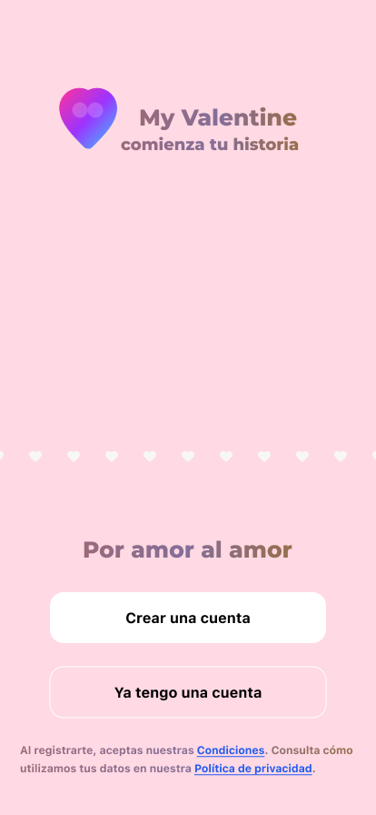
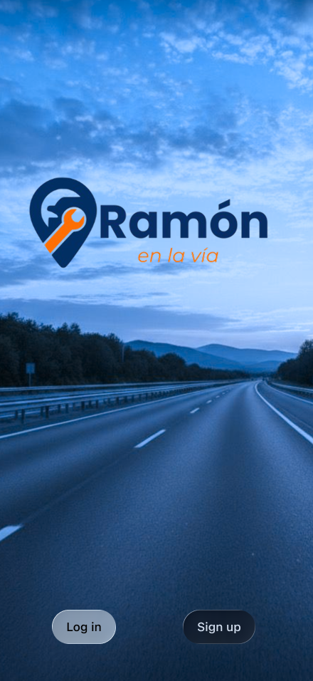

My Valentine
Diseño UX/UI para una aplicación móvil orientada a conexiones sociales de forma segura e inclusiva.
Creo experiencias digitales fundamentadas en investigación, análisis de necesidades reales y diseño visual con propósito estratégico.

Mi recorrido comenzó en el área de Administración de Empresas en la Universidad de Los Andes, lo que me dio una visión clara de los procesos de negocio y los objetivos comerciales. Al enfocarme en UX/UI, uní esa mirada estratégica con la investigación de usuarios para diseñar soluciones intuitivas y con impacto real.
Una muestra de casos donde la investigación se traduce en experiencias interactivas.

Diseño UX/UI para una aplicación móvil orientada a conexiones sociales de forma segura e inclusiva.

Plataforma móvil de asistencia vehicular 24/7 con prototipado enfocado en la inmediatez del servicio.